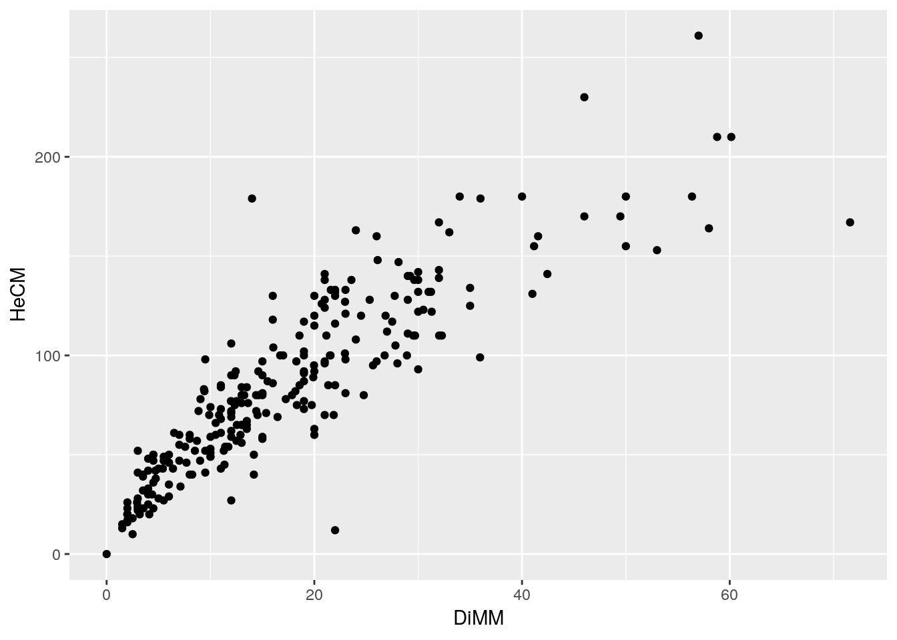

Chapter 9 Regression analysis using measurements on individual pinesfrom the Arne 2019 data
9.1 Introduction
In today’s class you will learn how to run a regression analysis in R using the data collected from Arne as an example.
There are several handouts in both the online course book for this unit and AQM that cover the theory of regression in more depth. The purpose of this class is to provide the tools in R to run a regression and interpret the output.
9.1.1 Load R libraries
The libraries that are almost always used in any R analysis include ggplot2 (for graphics) dplyr (for data manipulation) and readr/readxl for data import.
library(ggplot2)
library(aqm)
library(dplyr)
library(readr)
library(readxl)9.1.2 Load the data
The data collected at Arne this year has been collated into an Excel spreadsheet that you should have placed in the directory that you are using for the analyis.
## Loads in the first sheet in the excel spreadsheet.
# d<-read_excel("Collated Pine Data.xlsx")If you are missing this file I have placed the data inthe aqm package for easy loading.
## This loads data from the aqm package
data(arne_2019)
d<-pine_htsThis line provides you with the data. However you should practice getting data into R from Excel yourself, as you will need to do this in future to run regression analyses and other statistical procedures on data that you will collect.
9.1.3 Looking at the data
As you saw last session the import data set feature in Rstudio includes a command to view the data. This commend will not run within a markdown document. However the dt function in the aqm package does produce a very handy table of data that is placed within the compiled html document. You can use this to sort, filter and export your data. This is particularly useful if you are working with others who do not use R, as the data can be passed back into a spreadsheet.
dt(d)9.1.4 Simple base R figures
When conducting any analysis the most important step is visualsing your data. This cannot be stressed enough. If you haven’t looked carefully at the patterns in your data then the statistics that you produce will be very difficult to understand. A rigorous regression analysis involvesconducting formal diagnostics which test the assumptions used in the model. Most of these diagnostic tests involve visualising patterns in the data.
There are therefore two types of figures that you will produce when analysing your data. The first type are produced to help you understand your own data. Typically these figures are not included in the final write up of the analysis. They are steps along the path towards understanding your data. So they do not need to be formatted and labelled in a manner that would be required for publication.
An example would be to produce a simple histogram of pine heights.
hist(d$Age)
boxplot(d$Age)
summary(d$Age)## Min. 1st Qu. Median Mean 3rd Qu. Max.
## 0.000 3.000 5.000 4.617 6.000 9.0009.1.4.1 Exercise
Produce histograms and boxplots of pine ages, heights and diameters.
9.2 Scatterplots
A very simple scatter plot can be produced by simply asking to plot the variable to be placed on the x axis and the variable on the y axis. This is a quick and easy way of looking at the pattern.
plot(d$DiMM, d$HeCM)
A more sophisticated approach that can produce figures suitable for inclusion in a report uses ggplot.
fig1<-ggplot(d,aes(x=DiMM,y=HeCM)) + geom_point()
fig1
9.3 Regression vs correlation analysis
The word “correlation” is often used in a very loose sense by students to refer to associations between any sort of variables. In statistics correlation analysis involves looking at the (co)relationship between two numerical variables. Parametric correlation analysis is part of regression analysis. However the statistical significance of a correlation is not always of any interest. In this case we know a priori that there is a relationship between pine height and pine diameter. Pine trees increase both in girth and height as they grow. So we would never want to test the statistical significance of the relationship. However we do want to quantify the relationship and look at the pattern.
9.3.1 Spline and line analysis
In many cases the purpose of regression analysis is not to detect whether a relationship exists. It is to look at both the shape and the parameters of the relationship. In the AQM unit we will look at this aspect of statistical modelling in some detail. At this stage we need some simple, intuitive, methods based on data visualistion.
When we form a scatterplot we can often think of the pattern in terms of two components. An underlying relationship (signal) and scatter around the relationship (noise). Sometimes the signal takes the form of a straight line. In other situations it may take other forms.
The ggplots package in R ia a very useful tool for detecting the underlying pattern in a scatterplot. The way to do this is to add geom_smooth to the points.
fig1 +geom_smooth()
By default the smoother used in a loess curve, which aims to follow the empirical pattern as closely as possible. The theory behind this is covered in aqm. The smoother will detect non linear patterns.
Very few underlying patterns really follow the form a straight line. Regression analysis is useful if the pattern approximates to a straight line. In this case it does (up to a point). There is a slight curve in the trend tha would probably become more pronounced if larger pines were included in the sample.
However we might argue that a straight line relationship is a reasonable aprpromation for the data in our particular size class range.
fig1 + geom_smooth(method="lm")
There is in fact a notable issue here. Very small pines all tend to fall below the regression line. We will come back to this. For the moment let’s (falsely) assume that it is OK to fit a relationship
9.4 Fitting a regression
reg_mod<-lm(data=d,HeCM~DiMM)
summary(reg_mod)##
## Call:
## lm(formula = HeCM ~ DiMM, data = d)
##
## Residuals:
## Min 1Q Median 3Q Max
## -89.094 -13.230 -2.461 11.893 105.200
##
## Coefficients:
## Estimate Std. Error t value Pr(>|t|)
## (Intercept) 29.485 2.345 12.57 <2e-16 ***
## DiMM 3.165 0.108 29.30 <2e-16 ***
## ---
## Signif. codes: 0 '***' 0.001 '**' 0.01 '*' 0.05 '.' 0.1 ' ' 1
##
## Residual standard error: 21.75 on 254 degrees of freedom
## Multiple R-squared: 0.7716, Adjusted R-squared: 0.7707
## F-statistic: 858.3 on 1 and 254 DF, p-value: < 2.2e-16The regression equation takes the form of
\(y = a + bx\)
In this case the equation is y = 29.5 + 3.2x
The R2 value is 77.2 %
Notice that there is a problem with this equation. The intercept of th regresion line represents the y value when x = 0. We would expect this to be zero. In many situations the intercept is not particularly important, as the interpretation of a regression equation is that it is an empirical fit to the data within the bounds of the data collected. In other words you can’t use the equation to predict the heights of trees either larger or smaller than those found in the sample. However in this particular case the model does not fit the data very well at low diameter values, so the high value for the intercept is the result of the fact that the relationship is only approximately represented by a straight line.
9.5 Fitting a GAM
library(mgcv)
gam_mod<-gam(data=d,HeCM~s(DiMM))
summary(gam_mod)##
## Family: gaussian
## Link function: identity
##
## Formula:
## HeCM ~ s(DiMM)
##
## Parametric coefficients:
## Estimate Std. Error t value Pr(>|t|)
## (Intercept) 85.453 1.265 67.56 <2e-16 ***
## ---
## Signif. codes: 0 '***' 0.001 '**' 0.01 '*' 0.05 '.' 0.1 ' ' 1
##
## Approximate significance of smooth terms:
## edf Ref.df F p-value
## s(DiMM) 4.106 5.096 202.2 <2e-16 ***
## ---
## Signif. codes: 0 '***' 0.001 '**' 0.01 '*' 0.05 '.' 0.1 ' ' 1
##
## R-sq.(adj) = 0.802 Deviance explained = 80.5%
## GCV = 417.93 Scale est. = 409.6 n = 256fig2<-fig1 +
geom_smooth(method="gam", formula=y~s(x)) +
xlab("Diameter of juvenile pines (mm) measured at 5 cm above ground level") + ylab("Height of juvenile pines (cm)")fig2